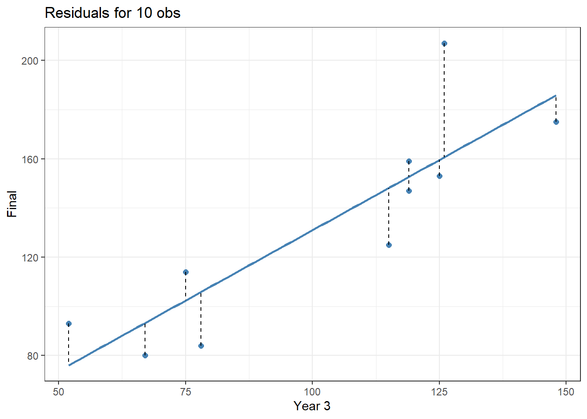
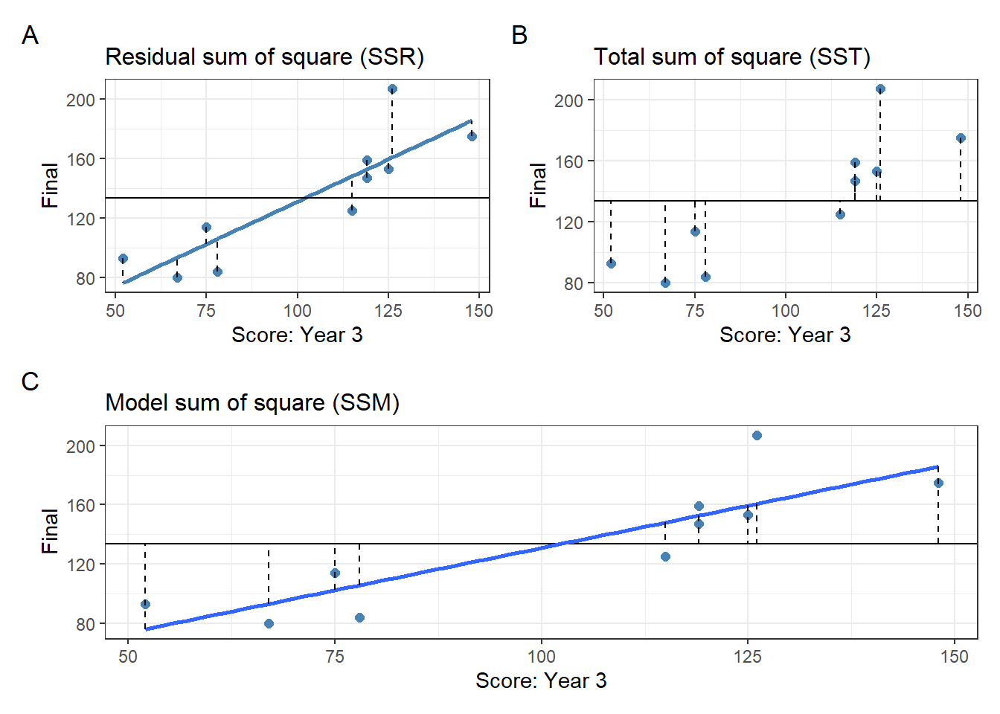

library(tidyverse)
library(patchwork)Regression
1 An introduction to regression
Regression is a way of predicting an outcome variable from one predictor variable (simple regression) or several variables (multiple regression)
General equation: \[ \text{outcome}_i = \text{(model)} + \text{error}_i \]
Mathematical equation: \[ Y_i=(b_0+b_1X_i)+\epsilon_i \]
A model consists of (1) slope (gradient) of the line (denoted by \(b_1\)), and (2) intercept (point at which the line crosses the vertical axis of the graph, denoted by \(b_0\)).
Both \(b_0\) and \(b_1\) are known as regression coefficients
The \(\epsilon_i\) or error is the residual (real data point - predicted data point). In regression, the difference is called residual, not deviation, although both of which mean the same thing.
2 Method of least square
- The method of least square: a way of finding the line that best fits the data.
df <- read_csv("ugtests.csv", show_col_types = F)
# subset
top10 <-
head(df[, c("Yr3", "Final")], 10)# fit the model
model <-
lm(Final ~ Yr3, data=top10)
# get residual and predicted values
residuals <- residuals(model)
predicted <- predict(model)
# make the plot
ggplot(top10, aes(x = Yr3, y = Final)) +
geom_point(size = 2, color = "steelblue",
shape=19) +
geom_smooth(method = "lm", formula = "y ~ x", se = F,
color="steelblue") +
geom_segment(aes(xend = Yr3, yend = predicted),
linetype = "dashed") +
theme_bw() +
labs(title="Residuals for 10 obs", x= "Year 3")
- The line of best fit is known as a regression line or regression model.
3 Assessing the goodness of fit: Sums of squares, \(R\), and \(R^2\)
To asses the line of best fit, use this formula: \[ \text{deviation}=\Sigma(\text{observed - model})^2 \]
R-squared (\(R^2\)) \[ R^2=\frac{SS_M}{SS_T} \]
Note:
\(SS_M\): model sum of squares \(\rightarrow\) degree of inaccuracy when t6he best model is fitted to the data.
\(SS_T\): total sum of squares
The square root of \(R\)-squared = Pearson’s correlation coefficient (\(R\)).
p1 <-
ggplot(top10, aes(x = Yr3, y = Final)) +
geom_point(size = 2, color = "steelblue",
shape=19) +
geom_smooth(method = "lm", formula = "y ~ x", se = F,
color="steelblue") +
geom_hline(yintercept=mean(predicted)) +
geom_segment(aes(xend = Yr3, yend = predicted),
linetype = "dashed") +
theme_bw() +
labs(title = "Residual sum of square (SSR)",
tag="A", x= "Score: Year 3") +
theme(plot.title=element_text(size=12))
p2 <-
ggplot(top10, aes(x = Yr3, y = Final)) +
geom_point(size = 2, color = "steelblue",
shape=19) +
geom_hline(yintercept=mean(predicted)) +
geom_segment(aes(xend = Yr3, yend = mean(predicted)),
linetype = "dashed") +
theme_bw() +
labs(title = "Total sum of square (SST)",
tag="B", x= "Score: Year 3") +
theme(plot.title=element_text(size=12))
p3 <- ggplot(top10, aes(x = Yr3, y = Final)) +
geom_point(size = 2, color = "steelblue",
shape=19) +
geom_hline(yintercept=mean(predicted)) +
geom_smooth(method="lm", formula="y~x", se=F) +
geom_segment(aes(y=predicted, xend = Yr3,
yend = mean(predicted)),
linetype = "dashed") +
theme_bw() +
labs(title="Model sum of square (SSM)",
tag="C", x= "Score: Year 3") +
theme(plot.title=element_text(size=12))
(p1 | p2) / p3
Note:
A: \(SS_R\) uses the differences between the observed data and the regression line.
B: \(SS_T\) uses the differences between the observed data and the mean value of \(\text{Final}\).
C: \(SS_M\) uses the differences between the mean value of \(\text{Final}\) and the regression line.
Differences between \(R\) and \(R^2\):
\(R\) (Pearson’s correlation coefficient) provides a good estimate of the overall fit of the regression model
\(R^2\) provide a good gauge of the substantive size of the relationship.
In addition to \(R\) and \(R^2\), another way of assessing a model is by using the \(F\)-test.
- \(F\)-test: a comparison between model and error in the model
\[ F=\frac{MS_M}{MS_R} \]
Note:
\(MS_M\): mean square of the model
\(MS_R\): mean square of the residuals
\(MS\) is the average sums of squares (\(SS_{\text{mean}}\))